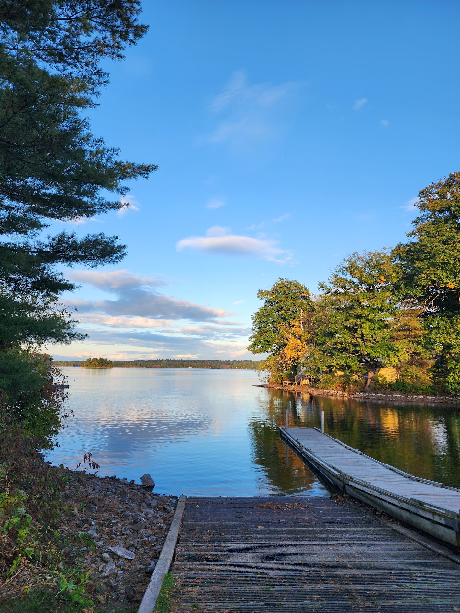
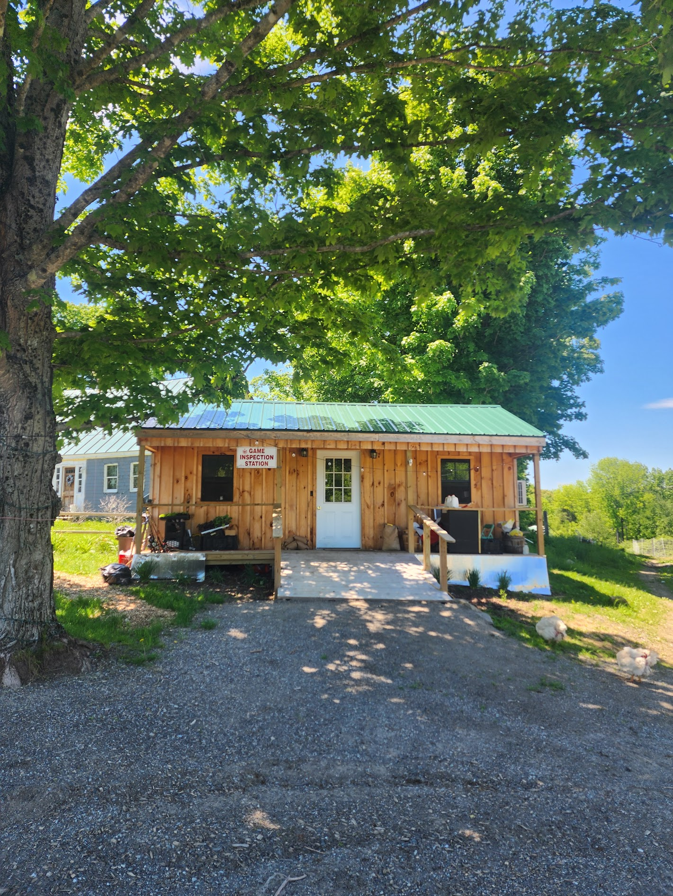
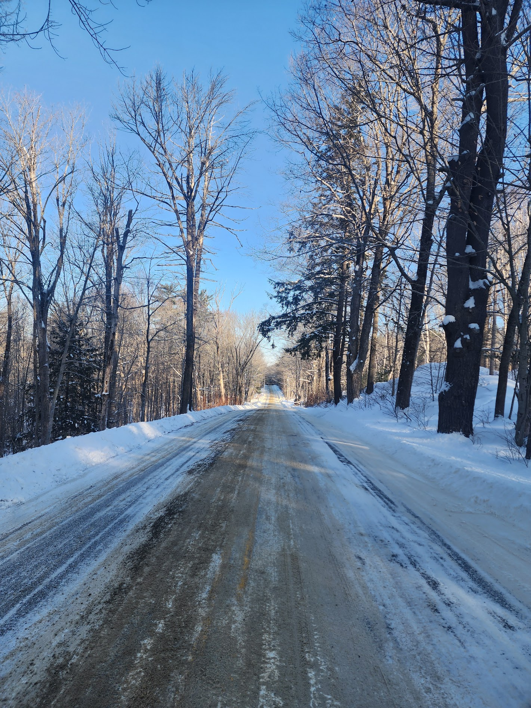
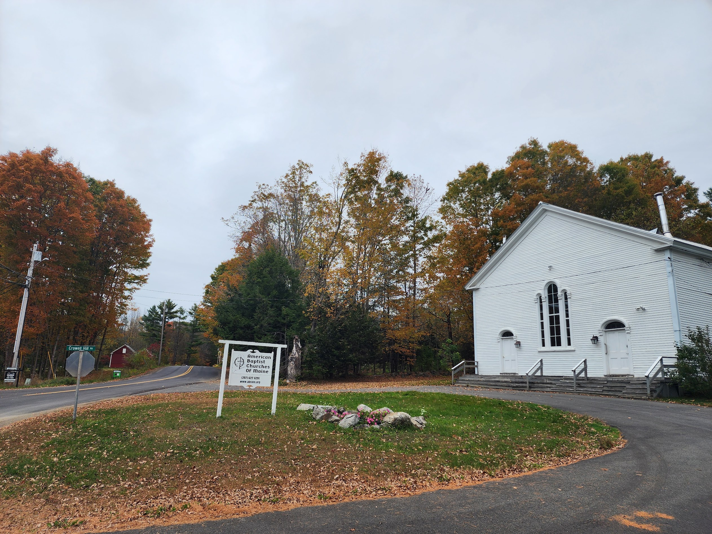
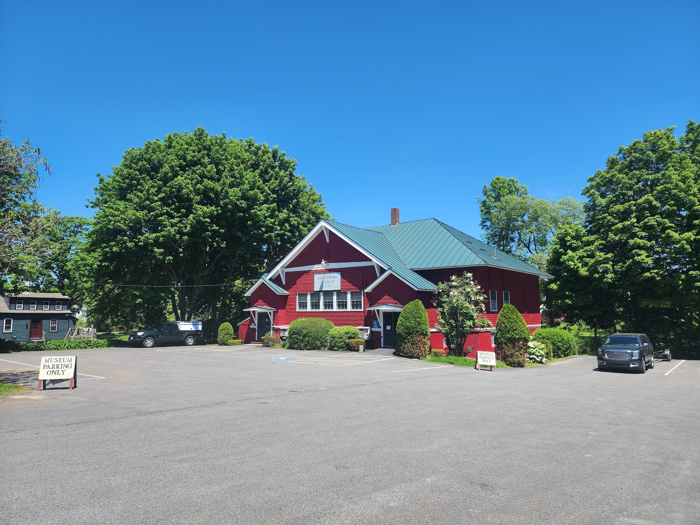
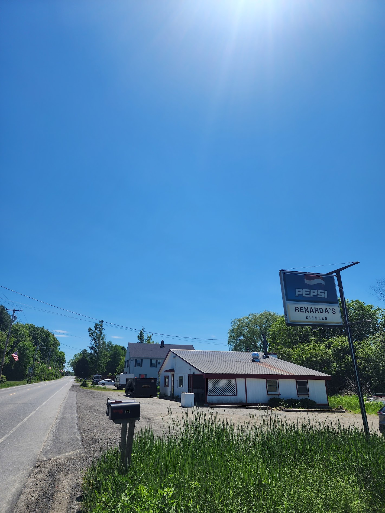

The yellow building on the left used to the the County Store, but is now closed. Its future seems to be
unknown. On the right is the Revere House, which was renovated earlier this year.
June 2026

Webber Pond. Right off the boat ramp on Dam Road.
October 2024

RL Mercantile & Trading Post off Brann Road.
They used to sell their own groceries, but nowadays they sell hunting goods and fishing gear. They also
offer taxidermy and tannery services.
June 2026

Cross Hill Road the morning after a snow storm. Between 10-12 inches.
Janurary 2026

American Bapist Church of Maine building, off Crowell Hill and Cross Hill Road.
Formerly Center Vassalboro Baptist Church
October 2025

The Vassalboro Historical Society.
June 2026

Remnants of Renarda's Kitchen, what used to be the only sit down restaurant in Vassalboro.
Closed November 2025. Last I heard, a new restaurant and pizza/sub shop is coming in.